R scripts (.R) help to define and run reproducible analysis workflows, but they lack documentation (other than comments).
R Markdown files (*.Rmd) combine scripts with powerful text formatting. They can be rendered (=“knit”) to produce html and pdf.
Task: In Rstudio,
open a new R markdown document with File > New File > R Markdown.... (This will open a template for an Rmd file that can be knit)
To convert this file into html press Knit - try it out! You may have to save it first as - e.g. “first.Rmd”
There is a YAML header that contains parameters which will affect the rendering process - customize them
The rest of the document are text blocks (with simple format instructions) and code blocks (with R code)
In R studio, the code blocks can also be run individually using the embedded Play button - try it out
Play time: Modify the yaml header, text blocks or code - or all of it. “knit” the documnt and observe changes.
Descriptive Statistics
Code
summary(iris)
Sepal.Length Sepal.Width Petal.Length Petal.Width
Min. :4.300 Min. :2.000 Min. :1.000 Min. :0.100
1st Qu.:5.100 1st Qu.:2.800 1st Qu.:1.600 1st Qu.:0.300
Median :5.800 Median :3.000 Median :4.350 Median :1.300
Mean :5.843 Mean :3.057 Mean :3.758 Mean :1.199
3rd Qu.:6.400 3rd Qu.:3.300 3rd Qu.:5.100 3rd Qu.:1.800
Max. :7.900 Max. :4.400 Max. :6.900 Max. :2.500
Species
setosa :50
versicolor:50
virginica :50
Code
plot(iris$Petal.Length) # a plot at last. Simple, but many arguments: ?plot
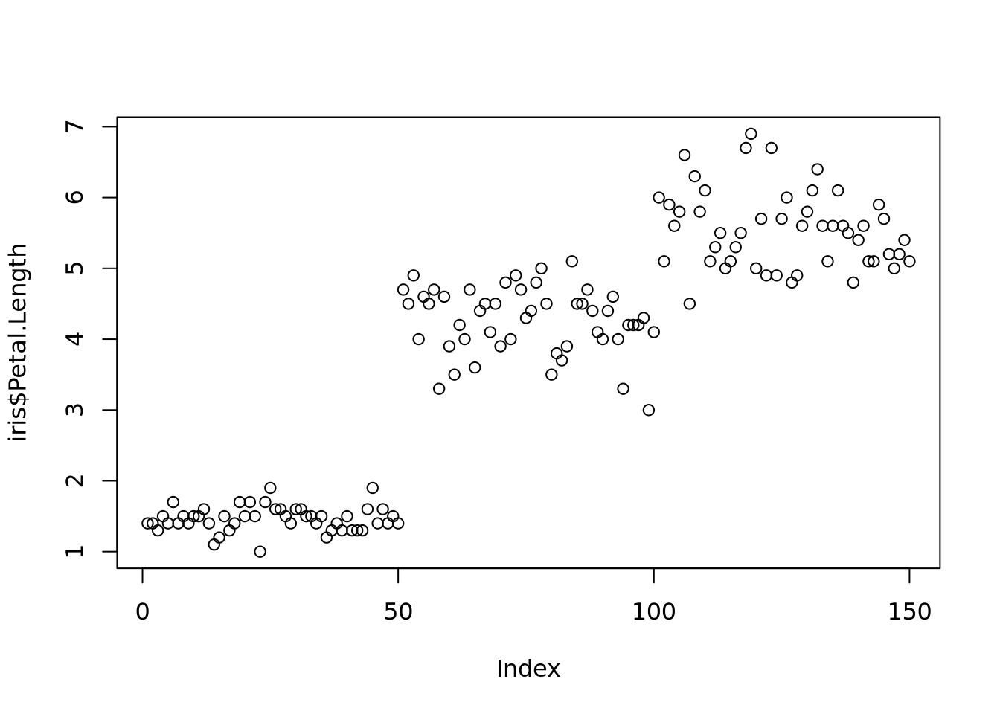
Code
hist(iris$Petal.Length) # and a histogram
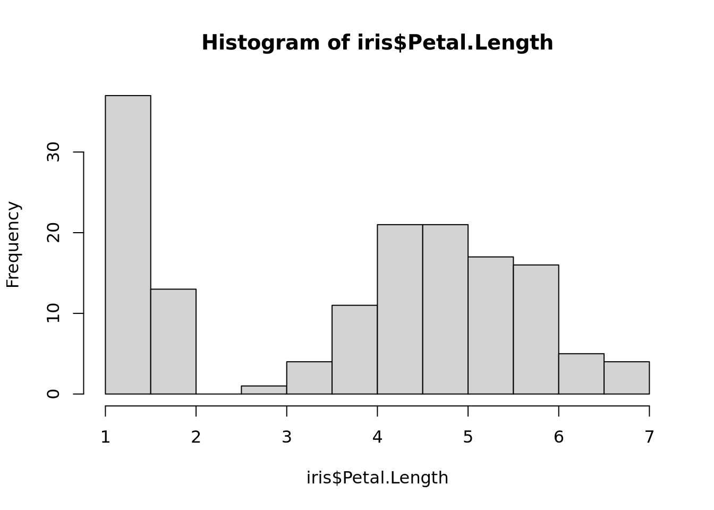
Task hist() can have many arguments. Use help to find out how the histogram can be customized (e.g. number of break points, title, colors). Try some of it.
Boxplot: a more condensed summary
Code
boxplot(iris$Petal.Length)
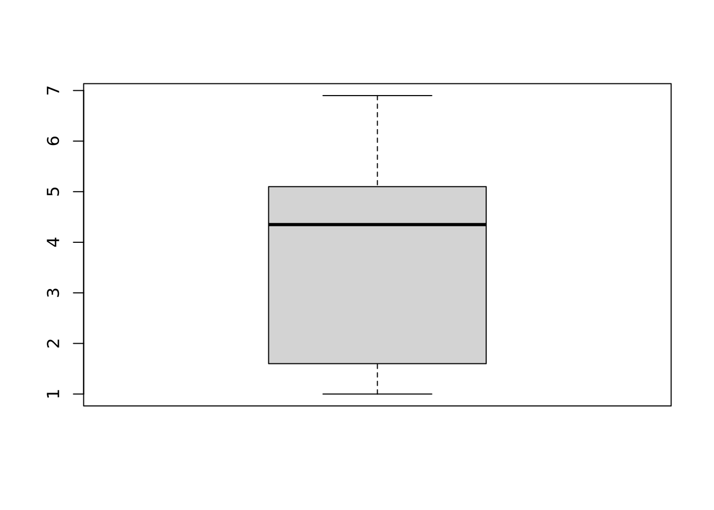
Task: The boxplot above is for all data. Create a boxplot of petal length for species “setosa” only.
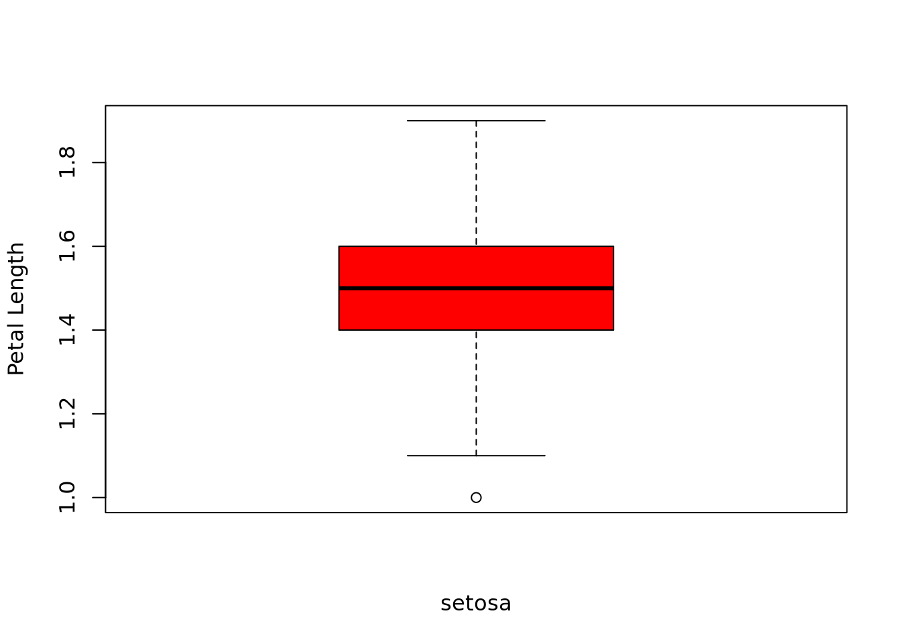
Boxplot understands data frames
Code
boxplot(iris)
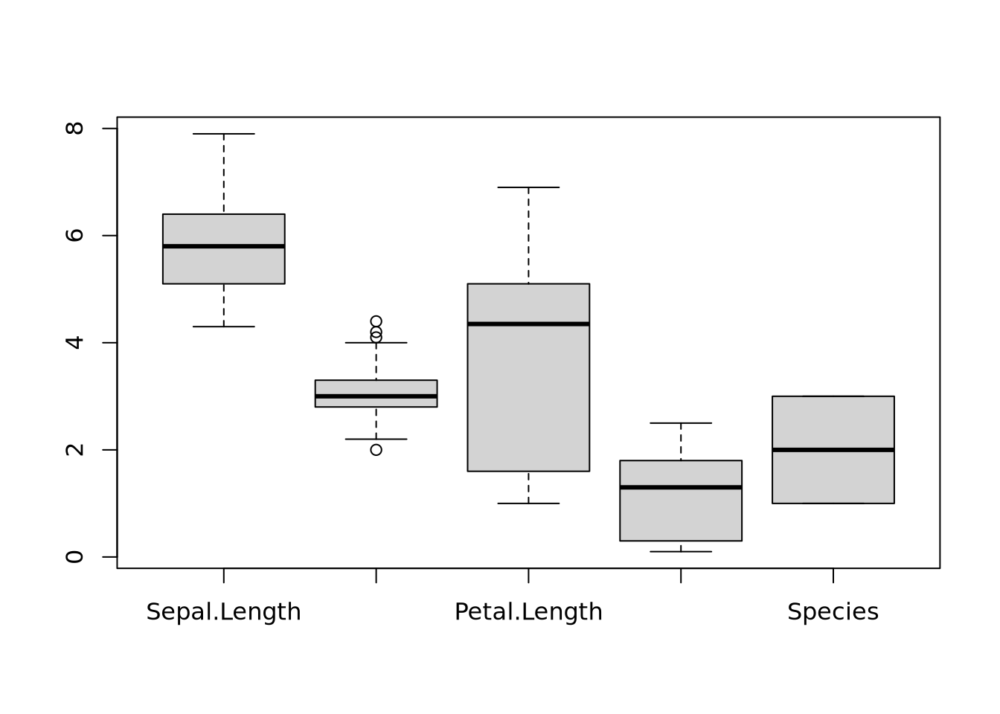
Query: What does the boxplot for Species mean?
Interlude: Factors = categorical variables
Factors denote a special class of R-objects that can be thought of as categories (here: species). They have a given number of levels which are internally represented as integers.
Code
class(iris$Species)
[1] "factor"
Code
typeof(iris$Species)
[1] "integer"
Code
ts=table(iris$Species) # returns a contigency table ~> histogram for categorical databarplot(ts, col=rainbow(3), ylab="observations", cex.names=0.9)
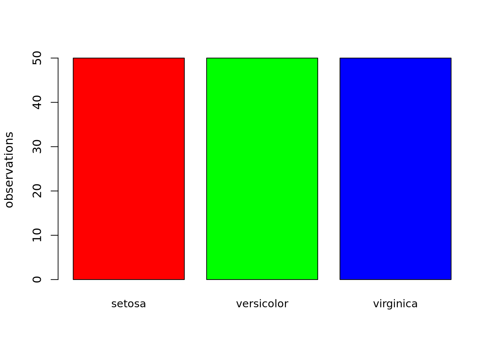
Code
pie(ts,col=rainbow(3)) # if you really must
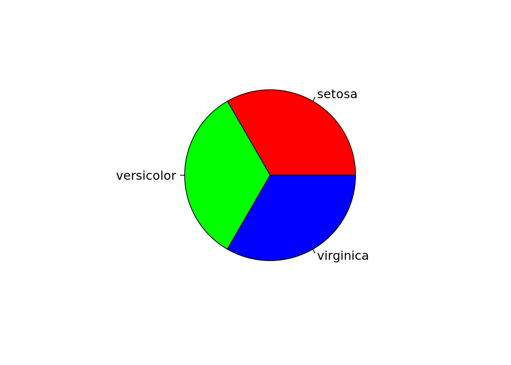
Boxplot understands factors in data frames
Code
boxplot( Petal.Length ~ Species, data = iris, las=2) # what does las=2 do ?
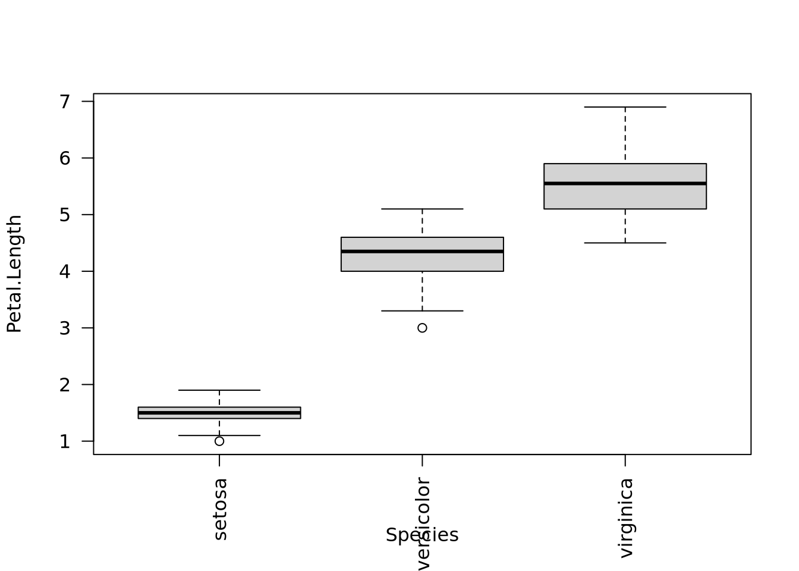
Task: Use help to add three different colors:
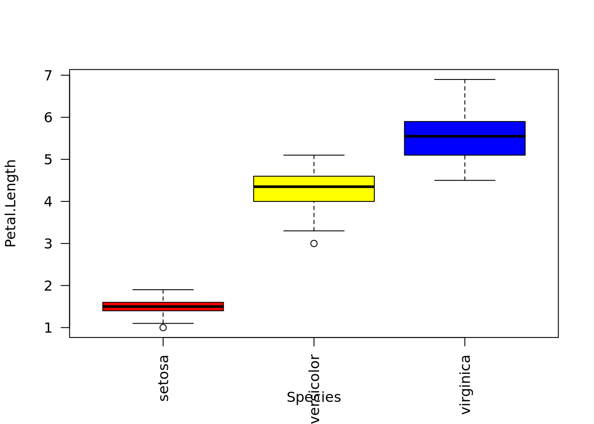
Correlations
If a data set has many numerical variables we often want to understand their correlations structure
Code
x=iris$Petal.Lengthy=iris$Petal.Widthplot(x,y) # again: this can be customizedabline(v=mean(x),h=mean(y),col="red") # add vertical/horizontal lines
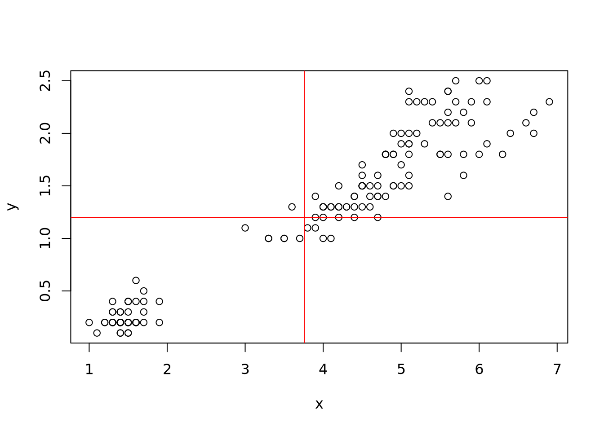
Code
cor(x,y) # a correlation coefficient: which one?
[1] 0.9628654
All-Against-All Correlations
Task: remove the Species variable from “iris” and store the result in a new data.frame “niris”
plot(niris) # provide a visualization for data frames, try also pairs(iris)
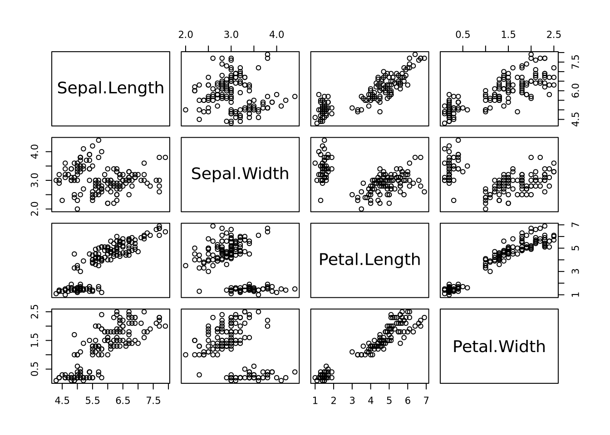
Code
# assign species-colors to each observation cols = iris$Species # understand how color is definedplot(niris, col=cols, lower.panel=NULL) # "cols" was defined in task above
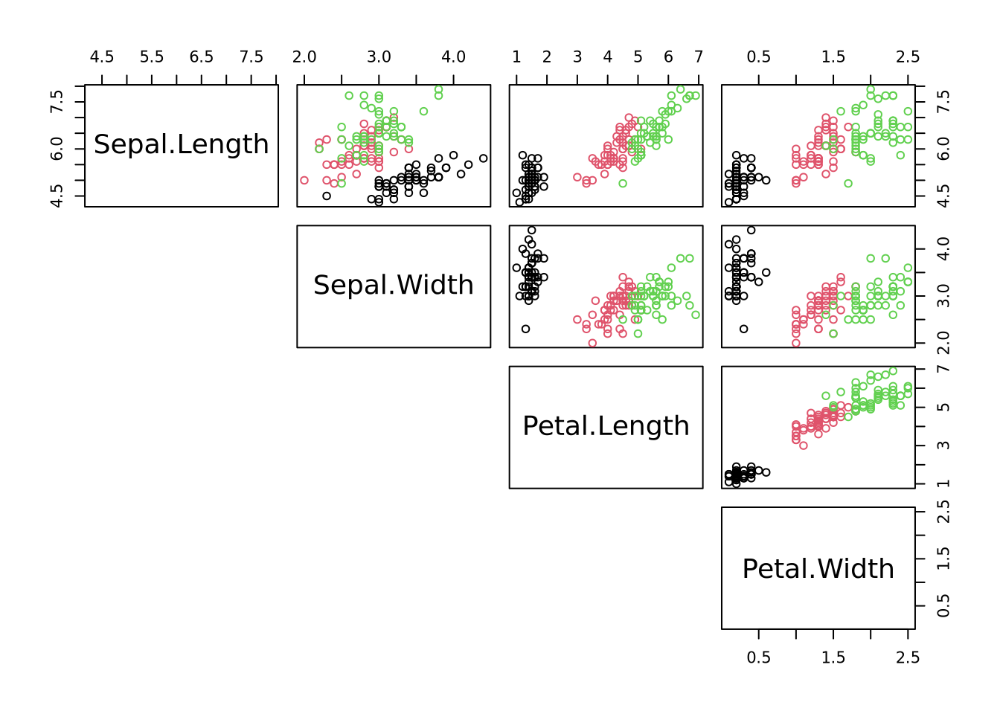
Review
R markdown files extend scripts and can be converted to html/pdf
summary for descriptive statistics
simple plots with simple commands: plot(), hist(), …
lots of parameters for customization: line width, colours, …
correlation between variables: cor(), plot() - class specific behaviour
Notice that the data used was extremely clean and structured: data()
Source Code
---title: "04: Data Descriptions and Visualizations"author: "Thomas Manke"categories: - markdown - hist() - cor() - boxplot()---```{r, child="_setup.qmd"}```# R MarkdownR scripts (.R) help to define and run reproducible analysis workflows, but they lack documentation (other than comments).R Markdown files (*.Rmd) combine scripts with powerful text formatting.They can be rendered (="knit") to produce html and pdf.**Task**:In Rstudio, - open a new R markdown document with `File > New File > R Markdown...`.(This will open a template for an Rmd file that can be knit)- To convert this file into html press `Knit` - try it out! You may have to save it first as - e.g. "first.Rmd"- There is a `YAML` header that contains parameters which will affect the rendering process - customize them- The rest of the document are `text blocks` (with simple format instructions) and `code blocks` (with R code)- In R studio, the code blocks can also be run individually using the embedded `Play` button - try it out- Play time: Modify the yaml header, text blocks or code - or all of it. "knit" the documnt and observe changes. ***# Descriptive Statistics```{r descriptive}summary(iris)plot(iris$Petal.Length) # a plot at last. Simple, but many arguments: ?plot hist(iris$Petal.Length) # and a histogram```**Task** hist() can have many arguments. Use help to find out how the histogram can be customized (e.g. number of break points, title, colors). Try some of it.# Boxplot: a more condensed summary```{r}boxplot(iris$Petal.Length)```**Task**: The boxplot above is for *all* data. Create a boxplot of petal length for species "setosa" only.```{r boxplot, echo=FALSE}boxplot(iris$Petal.Length[iris$Species=="setosa"], xlab="setosa", ylab="Petal Length", col="red")```Boxplot understands data frames```{r}boxplot(iris) ```**Query**: What does the boxplot for Species mean?# Interlude: Factors = categorical variablesFactors denote a special class of R-objects that can be thought of as categories (here: species). They have a given number of *levels* which are internally represented as integers.```{r factors}class(iris$Species)typeof(iris$Species)ts=table(iris$Species) # returns a contigency table ~> histogram for categorical databarplot(ts, col=rainbow(3), ylab="observations", cex.names=0.9)pie(ts,col=rainbow(3)) # if you really must```***Boxplot understands factors in data frames```{r boxplot_factors}boxplot( Petal.Length ~ Species, data = iris, las=2) # what does las=2 do ?```**Task**: Use help to add three different colors:```{r colored_boxplot, echo=FALSE}# use help to determine how to add colorscols=c("red","yellow","blue")boxplot( Petal.Length ~ Species, data = iris, las=2,col=cols)```# CorrelationsIf a data set has many numerical variables we often want to understand their correlations structure```{r corr}x=iris$Petal.Lengthy=iris$Petal.Widthplot(x,y) # again: this can be customizedabline(v=mean(x),h=mean(y),col="red") # add vertical/horizontal linescor(x,y) # a correlation coefficient: which one?```# All-Against-All Correlations**Task**: remove the Species variable from "iris" and store the result in a new data.frame "niris"```{r niris, echo=FALSE}niris=iris[,-5] # generate new data frame without species variablestr(niris)``````{r all_against_all}cor(niris) # correlation matrix. Which correlation coefficient?plot(niris) # provide a visualization for data frames, try also pairs(iris)# assign species-colors to each observation cols = iris$Species # understand how color is definedplot(niris, col=cols, lower.panel=NULL) # "cols" was defined in task above```***# Review* R markdown files extend scripts and can be converted to html/pdf* summary for descriptive statistics* simple plots with simple commands: plot(), hist(), ...* lots of parameters for customization: line width, colours, ...* correlation between variables: cor(), plot() - class specific behaviour* Notice that the data used was extremely clean and structured: data()